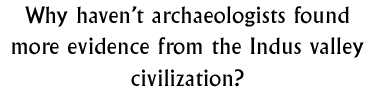

Discussion 12  |
|
Objectives: To encourage pupils to think about why archaeologists have not found more artefact evidence from the Indus Valley cities and to suggest explanations for this.
Materials: Photographs, books and/or illustrations of Indus Valley cities and archaeological sites.
Class set-up: Whole group discussion
Vocabulary: evidence, artefacts, climate
Discussion: It is more difficult to gain an accurate picture of the lives of the
people of the Indus Valley civilization because, compared with other ancient civilizations, the cities of the
Indus Valley have yielded little evidence in the form of textual evidence. Despite the abundance of artefacts
and objects discovered, we still know comparatively little about the details of the daily lives of these
cities.
Firstly, ask the children to list some of the types of evidence we do have from the Indus Valley. What can we definitely say we know about the people of the Indus Valley from the evidence we have found in their cities?What evidence is missing that would tell us more about their lives and cities? Where has the evidence gone? Compare the Indus Valley civilization to other 'better known' civilizations such as ancient Egypt. We have an extremely good idea of the lives of the ancient Egyptians because the evidence of their lives, language and behaviour. We can only guess at many of the aspects of Indus Valley life because so much evidence is missing. There are several theories as to what happened to the cities of the Indus valley civilization. There is no definite answer, but ideas to be considered are:
Background information:
The end of the Indus Valley CivilizationClimate in India Environment
© The British Museum |